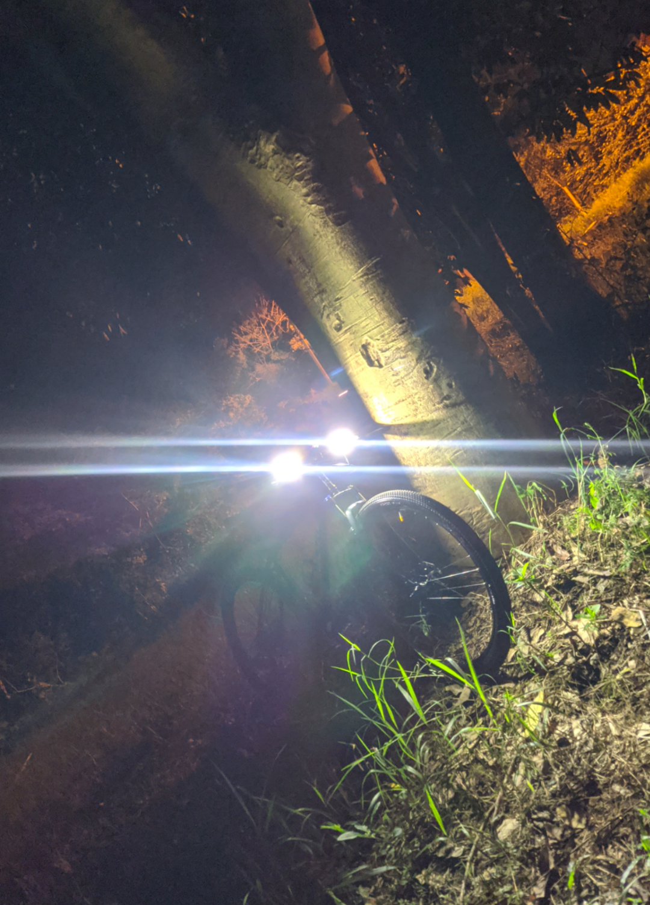
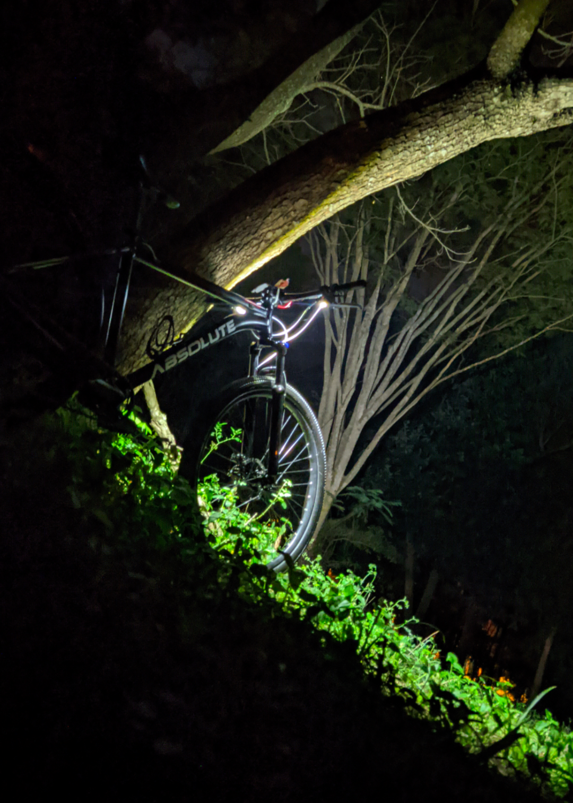
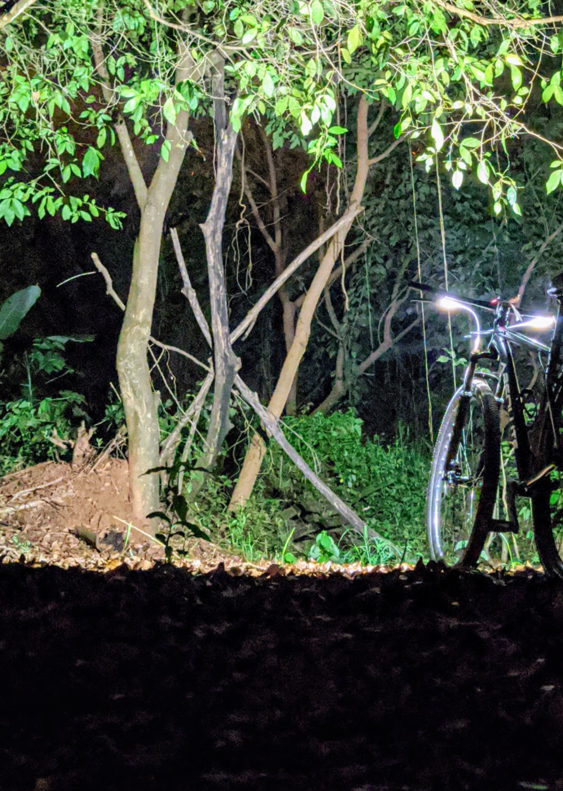

Inovação e tecnologia para suas pedaladas!
O farol inteligente para bicicletas que combina IA, GPS e sensores para maior segurança e praticidade.



Por que escolher o CBikeAI?
Inteligência Artificial
Nosso sistema de IA adapta automaticamente a iluminação conforme as condições do ambiente e sua velocidade.
GPS Integrado
Rastreamento em tempo real e rotas inteligentes para suas aventuras sobre duas rodas.
Segurança Total
Sensores de proximidade e detecção de veículos para garantir sua segurança nas ruas.
Bateria de Longa Duração
Até 15 horas de autonomia no modo econômico e carregamento rápido por USB-C.
Monitoramento de Saúde
Alertas de cansaço e batimentos cardíacos em parceria com smartwatches. Pedale com mais consciência sobre seu corpo e evite a fadiga excessiva.
Rotas Inteligentes
Planejamento de rotas seguras com cálculo da autonomia da bateria. A IA sugere os melhores caminhos, poupando energia e evitando áreas de risco.
Integração com Apps
Sincronize com Strava, Garmin e Apple Watch. Todos os dados do seu treino em um só lugar, com total compatibilidade.
Atualizações Contínuas
Seu farol evolui com você. Receba melhorias de IA e novas funcionalidades diretamente pelo app, sem fios (OTA).
Comunidade e Gamificação
Faça parte de uma comunidade de ciclistas, compare desempenho, participe de rankings e desafios exclusivos.
Pronto para revolucionar suas pedaladas?
Junte-se a milhares de ciclistas que já experimentaram a segurança e tecnologia CBikeAI.
Ainda não temos apoio público ou privado — contamos com você
A CBikeAI é desenvolvida inteiramente com recursos próprios, por um estudante da FATEC Taquaritinga. Fomos o único projeto da região selecionado na Escola de Inovadores do Centro de Paula Souza e certificados pelo Programa Centelha SP — mas, até o momento, não contamos com nenhum patrocínio público ou privado para avançar do protótipo para uma versão testável em campo.
Se você acredita em tecnologia a favor da segurança no ciclismo, sua contribuição, de qualquer valor, nos ajuda a comprar componentes, testar o sistema com ciclistas reais e dar o próximo passo.